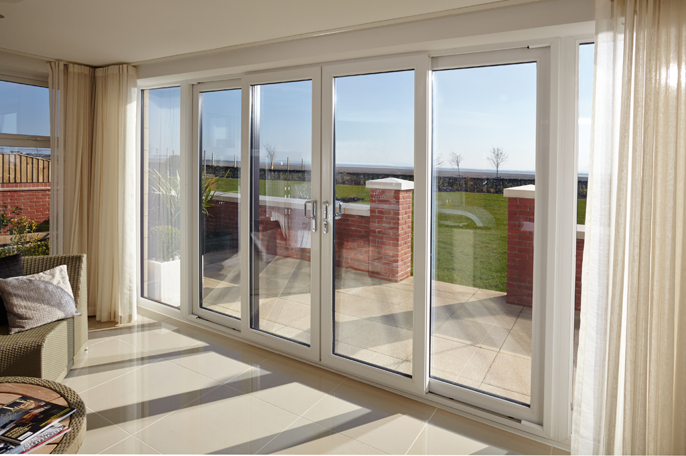
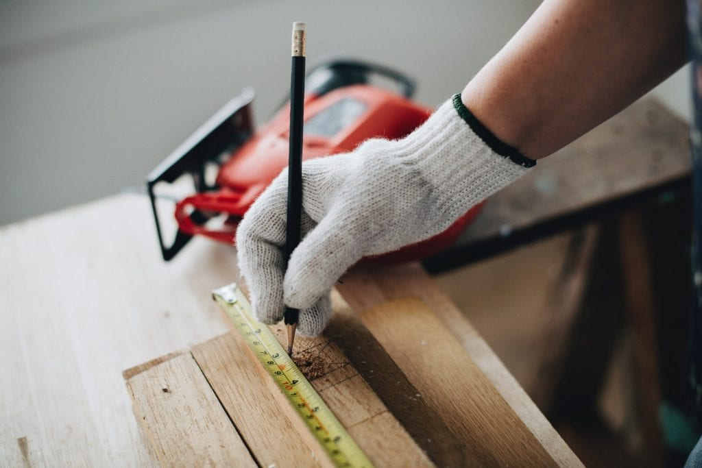
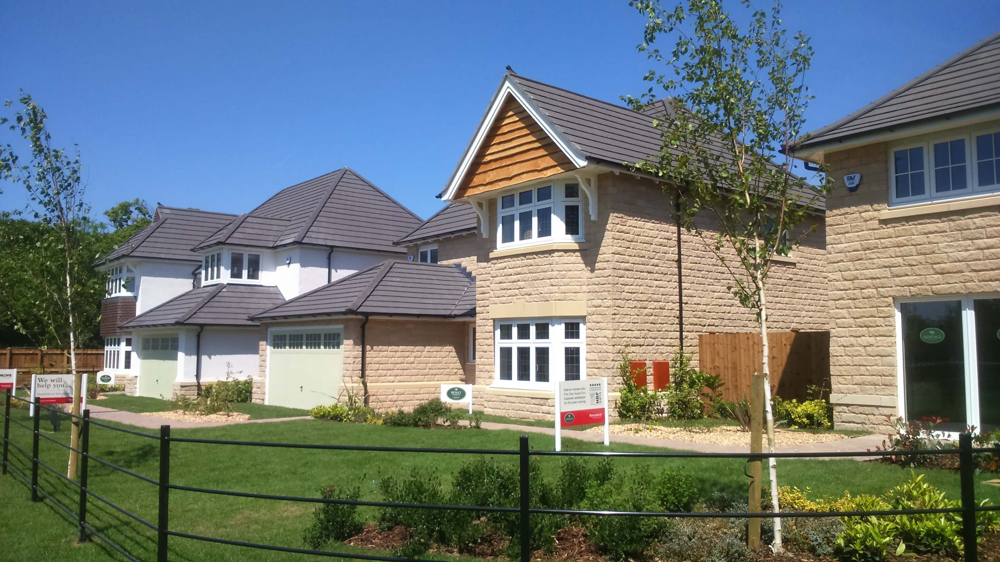

Are you looking for a professional UPVC Window/Door Manufacturer and Installer? SG Window Systems is here to assist. We created our business to provide customers with the highest quality UPVC doors and windows on the market. In addition, we also provide UPVC installation and repair services at a very good price. All you have to do is to get in touch with us and let us know how to assist, our team will be there to help at all times.
We started SG Window Systems in February 2010 and since then we have been providing the best Lancashire UPVC windows and doors on the market. What makes our business stand out is that you receive high quality services and value at a great price. On top of that, we are fully committed to value and professionalism, and you can rest assured that our team will offer comprehensive support and assistance when you need it the most.
We also work on custom made doors and windows. We create them according to your own drawings and specifications. That makes it easy for us to bring your vision to life quickly and with amazing benefits. With more than 9 years of experience in the industry, we have all the knowledge and expertise needed to handle any type of tasks that you might have.
Our products are created according to the latest industry requirements and we also use the best materials to ensure durability and value for everyone. We truly believe that value and quality matter a lot, and you can rely on us to bring you the efficiency and support you need here.
SG Window Systems also has numerous industry accreditations like BFRC, CE, CHAS, SMAS, CERTASS and many others. This really brings in front astounding benefits and true support that you will enjoy for sure. If you connect with our company today you will have no problem accessing some of the most reliable, durable and affordable Lancashire UPVC windows and doors. And since we take custom requirements too, we can easily create any kind of UPVC doors and windows you may need. You are in control at all times, and the best part is that you can have comprehensive support and assistance from industry professionals. All you have to do is to get in touch with us and let us know how to assist. Our team is always ready to provide you with the highest quality UPVC products on the market, so try us out today and you will not be disappointed!